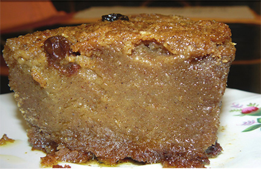

Sweet Potato Pudding

Sweet Potato(Pen Patat in Haitian Creole)
Pen Patat (Sweet Potato Pudding) is a classic dessert that is traditionally served in Haiti.
There’s truly nothing like
a warm slice of pen patat.
Ingredients
- 2 lbs. white sweet potatoes (boniato), peeled and cut
- 1 large banana, peeled and cut in 1 inch pieces
- 1 cup brown sugar
- 1/2cup seedless raisins
- 1 tsp grated ginger
- 1/4tsp salt
- 12 oz evaporated milk
- 1 tsp vanilla extract
- 1/2 tsp grated nutmeg
- 1 tsp ground cinnamon
- rind of 1 lemon, grated
- 1 1/2 cups coconut cream
- 1 tbsp butter
- 1/2 cup of shortening
Steps
- Preheat oven to 375 degrees
- Cut the sweet potatoes into 1 in cubes then grate them using a blender.
- Place them into a mixing bowl. Peel and mash the banana into the sweet potatoes.
- Add the remaining ingredients. Mixed all until well blended.
-
Transfer onto a pot and cook over medium heat, stirring constantly with a spoon for about 30-35 minutes until brown.
-
Place in a baking pan and bake for 1.5 hours or until toothpick inserted into the center comes out clean.